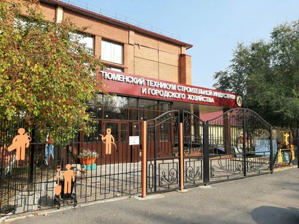
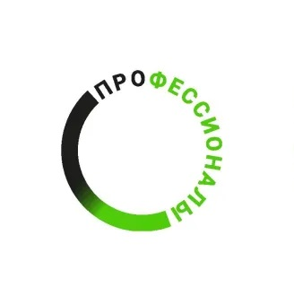
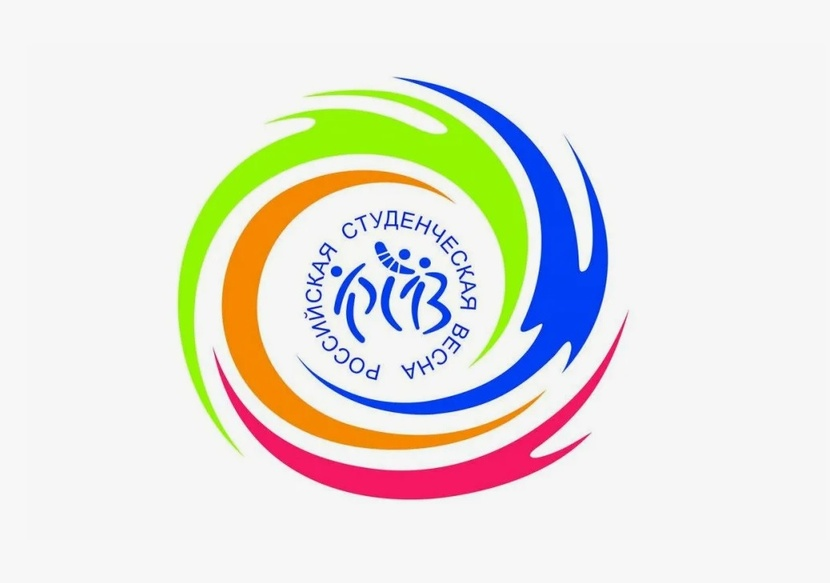

О техникуме:
Государственное автономное профессиональное образовательное учреждение Тюменской области «Тюменский техникум строительной индустрии и городского хозяйства» создан в мае 2010 г. на базе одного из старейших учреждений профессионального образования Тюменской области — ГОУ НПО «Профессиональное училище № 6».
История создания учебного учреждения начинается в октябре 1947 года, когда на базе Тюменского завода № 639 Министерства судостроения была открыта школа фабрично-заводского обучения (ФЗО) № 8. В 1958 г. школа ФЗО № 8 была реорганизована в строительное училище № 1 с двухгодичным сроком обучения по профессиям: маляр, штукатур, столяр.
Новости дня:


